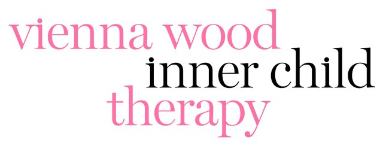

A free, private quiz
A trauma bond in adulthood is often the result of an unhealed childhood wound. While an adult logical brain recognises that a toxic relationship is damaging, the inner child experiences the partner’s intermittent warmth and emotional coldness as a familiar feeling of love.
If as a child you grew up in an environment where affection was conditional, unpredictable, or tied to keeping the peace, your nervous system has learnt to equate high anxiety with deep connection. As an adult, healthy and stable love can feel boring or unfamiliar, whereas a volatile, hot-and-cold relationship with someone who only gives you breadcrumbs mirrors the exact emotional atmosphere of your upbringing and feels familiar, even when we know it isn’t good for us.
This short quiz is designed to help you figure out why you feel so magnetically pulled to someone who keeps hurting you. If you are stuck on an emotional rollercoaster, where one day you are so in love with them because they are so perfect towards you, and the next they make you feel anxious, confused, or not good enough…
You aren’t crazy.
You definitely aren’t weak.
You might just be in a trauma bond.
Take this quiz to find out.
Start the quizAbout Vienna
I’m Vienna and I’m a psychotherapist specialising in childhood trauma and trauma bonds in adult relationships. I have helped hundreds of clients who have felt as though they can’t break out of the toxic relationship they feel stuck in to finally break free, heal their childhood wounds that kept them stuck in that cycle in the first place, be the best version of themselves and find healthy love. And guess what, if they can finally find the courage to get rid of Dave who can’t even give them the bare minimum, then you can too.